Resources
A collection of tools and resources for working with the dozenal system.
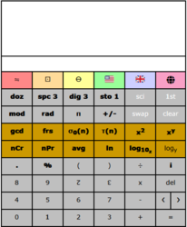 Click to open web page |
Title: Dozenal and Decimal Scientific Calculator Author: Paul Rapoport Type: Utility Nature: Web Summary: High-precision scientific calculator in dozenal and decimal with conversion among Primel, TGM, USC, Imperial, and SI metrologies. |
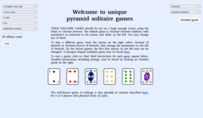 Click to open web page |
Title: Dozenal and Decimal Solitaire Games Author: Paul Rapoport Type: Game Nature: Web Summary: Practice in dozenal (and decimal) arithmetic. |
|
A collection of dozenal and decimal solitaire web games. |
|
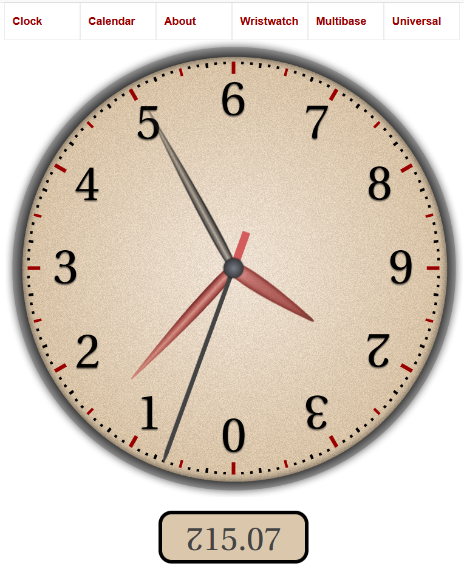 Click to open web page |
Title: Online Dozenal Clock Author: Paul Rapoport Type: Utility Nature: Web Summary: Very attractive online dozenal clock implemented in Javascript, done in a painterly style. |
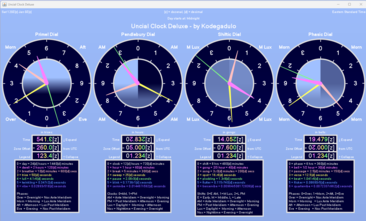 Click to download executable jar from Sourceforge |
Title: UncialClock Deluxe Author: John “Kodegadulo” Volan Latest Version: 1207091B-1 (released 1207-09-1Bz | 2023-09-23d) Type: Utility Nature: Java (Download) Summary: A Java program displaying up to four types of dozenal clock (based on the day, ½ day, ⅓ day, ¼ day) each in both analog and digital. |
|
This Java program displays up to four dozenal analog clock dials with digital readouts and legends, each with a technical and a colloquial name:
The background color varies from sky blue to midnight blue based on time of day. The explanatory legend boxes under the dials can be collapsed out of view if desired. Clicking anywhere on the dials reveals a configuration panel which allows the user to control the dial markings, orientation, spin direction, movement, and arrangement of hands on each analog dial; the radix point and digit precision on each digital readout; the date format; the terminology displayed (technical or colloquial); the day start (midnight, sunrise, noon, or sunset); the local time zone used; and what characters to use for dozenal ten and eleven digits. |
|
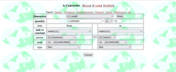 Click to open web page |
Title: A Converter Author: Takashi Suga Type: Utility Nature: Web Summary: An online converter for TGM, UUS, and other metric systems. |
|
Suga’s excellent metric converter, capable of dealing with many different metric systems, including TGM, SI, customary-imperial, and Suga’s own UUS, in many different bases. Options for precision and conversions for nearly any unit one can throw at it. |
|
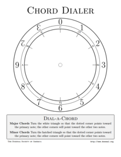 Click to view PDF |
Title: Chord Dialer Author: “Troy” (Donald Hammond) Type: Educational Summary: A simple printable, craftable chord dialer, using dozenal numbers to identify harmonious chords |
|
A simple, printable chord-dialer, which uses the innate powers of the dozen to identify harmonious major and minor chords. Notes are identified both by dozenal numbers and by the traditional musical notation (C, D, etc.). |
|
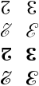 Click to download from CTAN |
Title: LaTeX Package: dozenal Author: Donald P. Goodman III Name: dozenal Version: 4.0 Type: Font Summary: Fonts and tools for dozenal in TeX and LaTeX |
|
This package, intended for use with the TeX/LaTeX typesetting system (the standard throughout the academic, and especially the mathematical, world), makes using TeX and LaTeX in dozenal easy. It provides commands for converting decimal numbers to dozenal; for producing dozenal characters (whichever are desired, and for which glyphs exist); and redefines all counters to be in dozenal. It also provides fonts for the Pitman characters for “ten” and “eleven,” in roman, bold, bold extended, slanted, bold slanted, italic, and bold italic forms. |
|
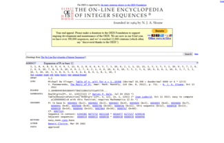 Click to install from Greasyfork |
Title: Dozenal OEIS Scripts Author: James Wood Version: 1.2.1 Type: Utility Summary: Permits viewing and searching OEIS in dozenal. |
|
The Online Encyclopedia of Integer Sequences is a powerful tool for learning about and investigating number theory; however, unfortunately, almost all of its sequences are available only in decimal. Thankfully, British dozenalist James Wood (also known as “m1n1f1g” and “mudri”) has developed user scripts for the Firefox and Chrome web browsers to fix that. These scripts produce the sequences in both decimal and dozenal, seamlessly on the results pages as well as the sequences' main pages. They also allow searching for sequences in dozenal. The main script is linked here; the dozenal search script can be found elsewhere. Note that these scripts may require something like the Greasemonkey add-on to function. |
|
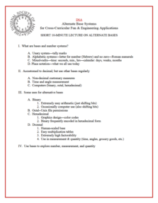 Click to download zip file |
Title: Alternative Base Systems Worksheets Author: Jen Seron and Dan Simon Type: Educational Nature: Download Summary: Instructional sheets and worksheets about non-decimal bases, devised for a program offered to a conference of the ASEE. |
|
A total of 22z (two dozen and two) worksheets and instructional sheets for teaching non-decimal bases and their applications, specifically designed around an engineering context. First used at the American Society for Engineering Education conference in Atlanta in 11B9z (2013d), these sheets were designed by DSA Secretary Jen Seron, a professional educator, and will be a boon to those trying to open the concept of non-decimal bases for younger students. |
|
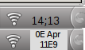 Click to download zip file |
Title: KDE Desktop TGM Clock Author: Donald P. Goodman III Name: dozenal-tgm-clock_0.zip Type: Utility Nature: Download Summary: Plasma applet for KDE desktop featuring a TGM (hour-based) clock and dozenal date. |
|
This little program makes a TGM (hour-based) dozenal clock applet available for your KDE desktop. It lists a four-digit time, with the hour and first two digits of the Tim count (e.g., “03;X0” for “3:50”), and on mouseover gives the date in dozenal (e.g., “0E Apr 11E9”). To install the package, download the zip archive and run the following command: plasmapkg -i dozenal-tgm-clock.zip You should then have the applet available for you in the standard “add applet”screen; you can use it in addition to, or instead of, your default system clock. |
|
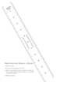 |
Title: TGM Measurement Tools Author: Donald P. Goodman III Name: TGM Measurement Tools Type: Guide Summary: Sheets and guides for easily producing TGM measurement tools, like rulers, scales, measuring spoons and cups, and so forth. |
|
A set of sheets and guides which provide easy ways to make easurement tools for using TGM, a coherent dozenal metric system. This includes rulers; weight/mass scales; measuring spoons; and measuring cups, with more to come.
|
|
Click to download zip file |
Title: Treisaran SVG Fonts for Pitman Characters Author: “Treisaran” Name: pitmansvg_treisaran.zip Type: Font Summary: Treisaran’s SVG fonts, with Pitman character matching a variety of free fonts. |
|
Contains a huge body of SVG fonts matching a variety of free font faces, suitable for use in word processors like LibreOffice or OpenOffice. Included fonts are:
A document can be typed with some placeholder for X and E, then a find-and-replace done with the appropriate symbols, or they can be inserted at the appropriate time as the document is produced. ooriginally published on the DozensOnline forum by contributor “Treisaran.” |
|
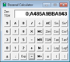 Click to download executeable Click to download source zip |
Title: ZCalculator Author: Michael Punter Name: ZCalculator Type: Utility Nature: Download Summary: Excellent graphical dozenal calculator with a fairly complete set of functions. |
|
A fine, visual calculator which works in both dozenal and decimal. Using “A” for ten and “B” for eleven, this calculator includes the basic trigonometric and logarithmic functions, some rudimentary memory functions, and of course the basic functions. It further includes exponential notation and buttons for certain constants (like π). Finally, it allows angular functions to be done using the traditional degree system (260z = 360d) degrees to the circle); the radian system; the circle divided into one dozen parts; or the TGM unciaPi system (the semicircle divided into a dozen parts). Designed to run in Windows, it also runs quite nicely under Unix-like systems using wine. You can also download it with its C++ source. |
|
Click to open F-Droid package |
Title: Dozenal Clock App for Android Author: Donald Goodman Name: Dozenal Clock Type: Utility Nature: Download Summary: A simple dozenal clock app, keeping time in hours and biciaHours. |
|
A dozenal (duodecimal, or base-twelve) clock and homescreen/lockscreen widget. Uses “X” for “ten"” and “E” for “eleven.” The app itself is full-screen and keeps time in four-digit Tims (that's 1×10−4 hours), with the Tims separated from the whole hours by a semicolon (“;”). The widget keeps time in two-digit Tims (that is, the two largest Tims), with the Tims separated from the whole hours by a semicolon (“;”). The widget also display the date. The app updates automatically when open; the widget, in order to preserve battery life, updates only when the time is tapped by the user. |
|
Click to open F-Droid package |
Title: DozenCalc: A Dozenal Calculator App for Android Author: Donald Goodman Name: Dozencalc Type: Utility Nature: Download Summary: A full-featured dozenal calculator, with both basic and scientific modes. |
|
A dozenal (duodecimal, or base-twelve) calculator with both simple and scientific modes. Simple mode (automatically chosen when in portrait orientation) contains the four functions, square roots, exponents, and parentheses for grouping, and operates to four digits of fractional accuracy. Scientific mode (automatically chosen when in landscape orientation) has all the same features, plus trigonometric functions and their inverses, logarithms, reciprocals, buttons for pi and the base of the natural logarithm, and variable precision allowing the user to select the number of fractional digits desired. |
|

{kind=link}